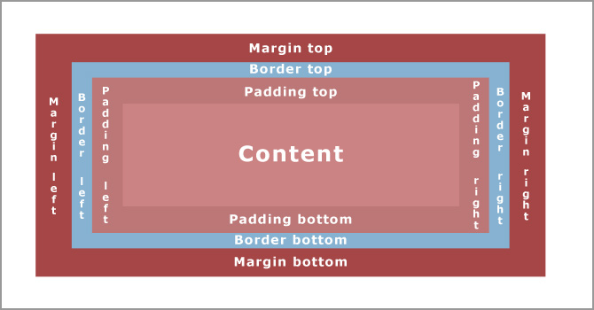
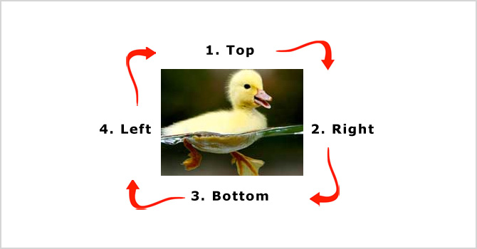

Margin, Padding and Border properties
Padding - It is the space between border and element content
Border - It is the area between its padding and its margins
Margin - It is the space between border and other outer elements
Margin
How to use Margins (individual sides)
- margin-top: 150px;
- margin-bottom: 150px;
- margin-right: 100px;
- margin-left: 150px;
How to use Margins (Shorthand property)
The shorthand property margin allows all four sides of an element's margins to be set using either one, two, three or four specified values.
- margin: 20px; -- all four margin is 20px
- margin: 10px 20px; -- top and bottom margins are 10px, right and left margins are 20px
- margin: 35px 15px 20px; -- top margin is 35px, right and left margins are 15px, bottom margin is 20px
- margin: 10px 20px 30px 15px; -- top margin is 10px, right margin is 20px, bottom margin is 30px, left margin is 20px

Refer to the mnemonic (TRouBLe) in Shorthand Properties as an easy way to remember the shorthand order of margins and paddings.
Padding
How to use Paddings (individual sides)
- padding-top: 150px;
- padding-bottom: 150px;
- padding-right: 100px;
- padding-left: 150px;
How to use Paddings (Shorthand property)
The shorthand property padding allows all four sides of an element's paddings to be set using either one, two, three or four specified values.
- padding: 20px; -- all four padding is 20px
- padding: 10px 20px; -- top and bottom paddings are 10px, right and left paddings are 20px
- padding: 35px 15px 20px; -- top padding is 35px, right and left paddings are 15px, bottom padding is 20px
- padding: 10px 20px 30px 15px; -- top padding is 10px, right padding is 20px, bottom padding is 30px, left padding is 20px
Borders
How to use Borders (individual sides)
- border-top-color: red;
- border-bottom-color: red;
- border-right-color: red;
- border-left-color: red;
- border-top-style: dotted;
- border-bottom-style: dotted;
- border-right-style: dotted;
- border-left-style: dotted;
- border-top-width: 1px;
- border-bottom-width: 5px;
- border-right-width: 1px;
- border-left-width: 1px;
How to use borders (Shorthand property)
No border
A dotted border - border: 3px red dotted;
A dashed border - border: 3px red dashed;
A solid border - border: 3px red solid;
A double border - border: 3px red double;
A groove border - border: 3px red groove;
A ridge border - border: 3px red ridge;
An inset border - border: 3px red inset;
An outset border - border: 3px red outset;
A hidden border - border: 3px red hidden;